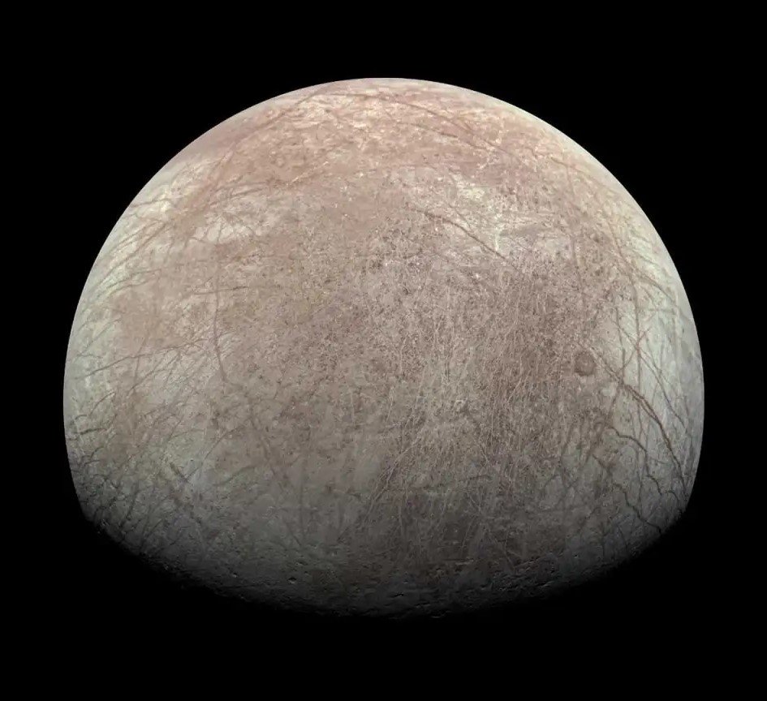
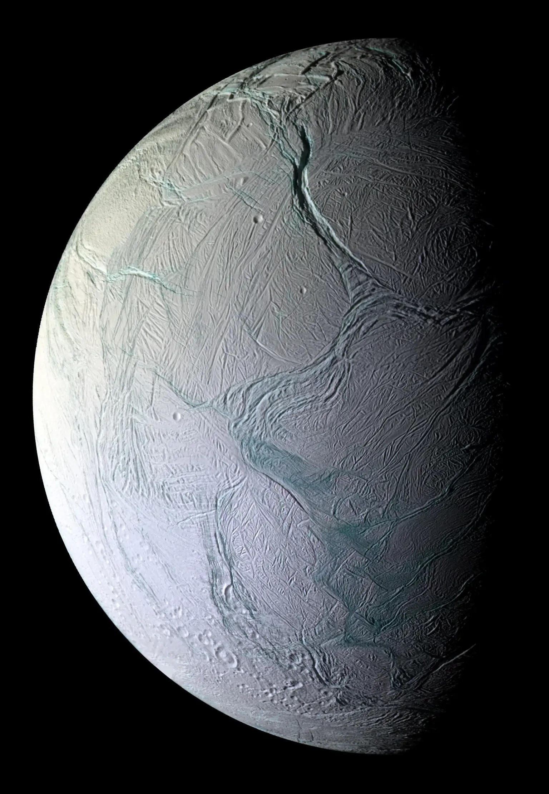

Q: Why did the sun go to school?
A: To get brighter!
Not the final frontier, but the next frontier. Neil DeGrasse Tyson, Twitter

There are more stars in our universe than grains of sand in all of Earth's deserts and on all of its beaches. There are more than 200 billion stars in the Milky Way galaxy alone, 10% of which are similar to the Sun. Nearly a fifth of those Sun-like stars have an Earth-sized plant in the "habitable zone", meaning there are an estimated 4 billion Earth-like planets in our galaxy. That number balloons to 40 billion if you include planets orbiting red dwarfs. The closest one? That would be Proxima Centauri b, which orbits the closest star to the Sun, Proxima Centauri, a mere 4.2 light-years away. If you were traveling at the speed of the fastest-moving manmade object (the Parker Solar Probe), an amazing 68.6 km/s, it would still take 18,500 years to get there. So close, yet so far.
There are far too many interesting facts about space than humanly possible to list. However, we have chosen a few as can be seen below. To learn a lot more, you could always Bing it or head on over to websites like NASA!
Hover over each joke to see the answer!
Q: Why did the sun go to school?
A: To get brighter!

Q: What do you call a tick on the moon?
A: A luna-tick

Q: Why did the people not like the restaurant on the moon?
A: Because there was no atmosphere.

Q: What do you call a loony spaceman?
A: An astroNUT :P
Q: Where would an astronaut park his space ship?
A: A parking meteor!

Q: What do planets like to read?
A: Comet books!
Scientists belive that in order for life to thrive on another planet, it must have three things:
So far we have yet to find signs of life anywhere in out galaxy other than Earth. However, many scientists speculate that there is a chance that there is life in our own solar system.
Europa, a moon of Jupiter, is an icy moon 1/4 the diameter of Earth (3100 km). It is suspected that Europa hosts a salt water ocean ~15 miles below it's icy surface. Since water is perhaps the most important requirement for life, the existence of Europa's ocean has given scientists hope that life has a chance to develop outside of Earth. There is currently a mission set to launch in October 2024 to send a satellite to observe Europa by 2030.
Another promising option is Enceladus, a moon of Saturn. Like Europa, Enceladus is an icy moon with a salt water ocean beneath it's surface. Additionally, the moon is known to shoot out jets of its ocean water into space, where scientists were able to sample it and not only identify that the ocean contains the chemicals necessary for life, but also that the moon's ocean has active hydrothermal vents heating it's ocean. However, Enceladus is significantly smaller than Europa, with a diameter of 504 km. One proposed NASA mission would have a lander sent to Enceladus in 2030 and land in 2050
